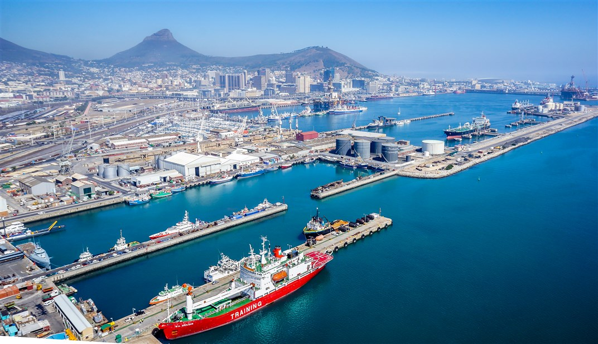
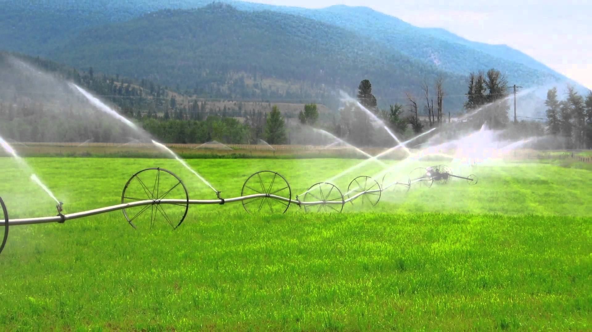
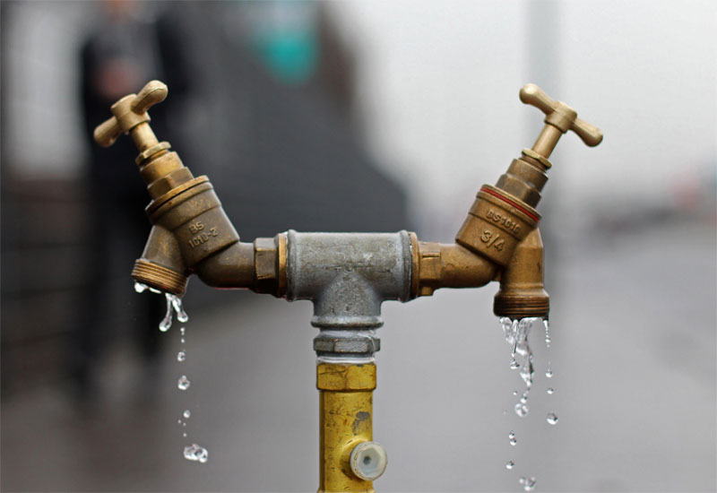

Water plays a vital role in day to day life
internet
On the entire earth, water is a most important thing. Every living organism needs water for survival. Apart from this, water is needed in industrial units, production units, and agricultural sector. Water is needed by microbes, animals, plants and everyone. The human body is in fact comprised of 75% of water and thus we are water bags only. Water permits blood flow through the vessels to help distribute essential nutrients and minerals throughout the body. It also allows the waste matter to get eliminated from the system. The great need for water becomes totally apparent when one feels thirsty. The transparent liquid is precious and everyone loves water when it moves down the throat.
Continue Reading

industrial usage of water
internet
Industries require large supplies of water. Machinery relies on water to cool it to a temperature that allows the manufacturing process to keep going. The mining industry needs water to wash off the material that has been brought up from underground in order to sort out the genuine product from other particles.
Continue Readingwater crisis
internet
Author, Professor and Director of the Institute for Environmental Science and Engineering at UC Berkeley, Professor Sedlak has developed cost-effective, safe, and sustainable systems to manage water resources, with emphasis on local sources of water, by water reuse– using municipal wastewater effluent to sustain aquatic ecosystems and augment drinking water supplies–and the treatment and use of urban runoff to contaminated groundwater from industrial sites as water supplies.

agricultural usage of water
Agricultural water is water that is used to grow fresh produce and sustain livestock. The use of agricultural water makes it possible to grow fruits and vegetables and raise livestock, which is a main part of our diet. Agricultural water is used for irrigation
Continue Reading

wastage of water
If you are reading this article, chances are you live in an urban household with pipes that provide a continuous flow of drinking water. However, people living in large parts of rural or semi-urban India are denied this basic right, a right most of us take for granted. While lack of availability and quality of water is a grave issue, it offers a large market waiting to be addressed by both governmental and free-market operators.
Continue Reading